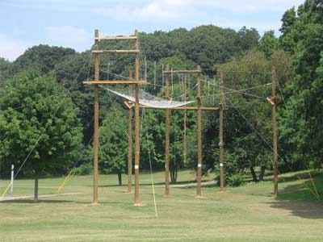
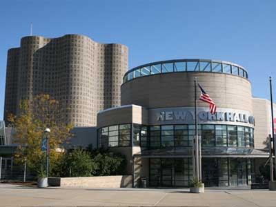
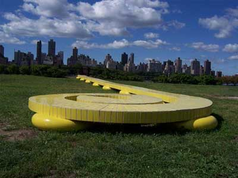
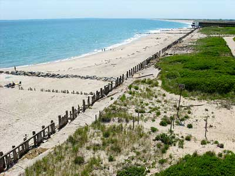

Home
Places
Videos
About Me
The Places You'll Go!
The Top 5 least expencive places in the Manhattan!
Pick an Image to see what lies inside!
Allen Pond Park

New York Hall of Sience

Socrates Sculpture Park

Fort Tilden Beach

Flushing Meadows Corona Park